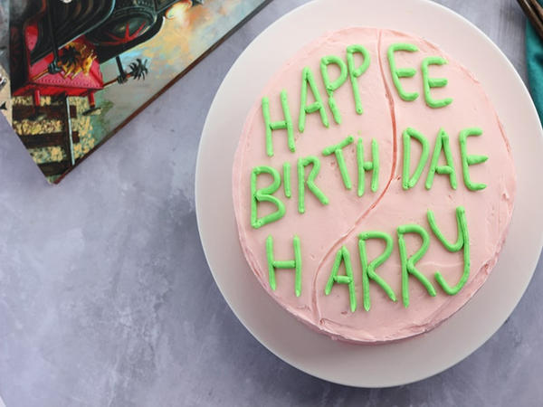

Recipe for Harry Potter's birthday cake
If you want to a Harry Potter Themed Birthday Cake, but have zero decorating skill, THIS recipe is for you!
For those who aren't familiar with the wizarding world, this is a copy of the cake that Hagrid presented to
Harry on his 11th birthday.
It was a pink frosted chocolate cake with “Happee Birthdae Harry” written in
bright
green.
INGRIDIENTS
For the cake
- 1-3/4 cup all-purpose flour
- 3/4 cup cocoa powder
- 2 teaspoons baking soda
- 3/4 teaspoon baking powder
- 1 teaspoon salt
- 396 g Scant 2 cups granulated sugar
- 3 large eggs
- 1 cup buttermilk
- 1/2 cup oil
- 1 teaspoon pure vanilla extract
- 1 cup warm coffee
For the frosting:
- 2 cups butter (soft)
- 6 cups powdered sugar
- 6 tablespoons heavy cream
- 2 teaspoons pure vanilla extract
INSTRUCTIONS
For the cake
- Preheat the oven to 350 degrees. Prep 3-8″ round pans pans with flour or parchment paper and set aside.
- Combine the flour, cocoa powder, baking soda, baking powder, and salt in a medium bowl. Set aside.
- Add the sugar with the eggs in a mixing bowl. Beat on medium speed until combined and fluffy. Stir in the
buttermilk, oil, and vanilla until combined.
- Alternate mixing in the dry ingredients with the coffee. Scrape the sides of the bowl and stir 1 minute
more.
- Divide evenly between the three pans, approximately 16 oz per pan.
- Bake 18 to 20 minutes or until a toothpick comes out clean when poked in the middle.
- Let the cakes cool 20 minutes. Turn out onto a cooling rack and continue cooling.
For the frosting
- Add the butter into the bowl of an electric mixer. Using the paddle attachment, beat for 2 to 3 minutes or
until the butter is smooth. Scrape the sides of the bowl with a spatula.
- Add the powdered sugar, one cup at a time, and continue to mix until incorporated.
- Stir in the cream and vanilla.
- Scrape the sides of the bowl. Increase the speed to medium and beat for 5 minutes or until light and fluffy.
- Scoop out 1/2 cup of the frosting and place in a small bowl.
- Use a pink food coloring for the larger amount of frosting and green for the 1/2 cup.